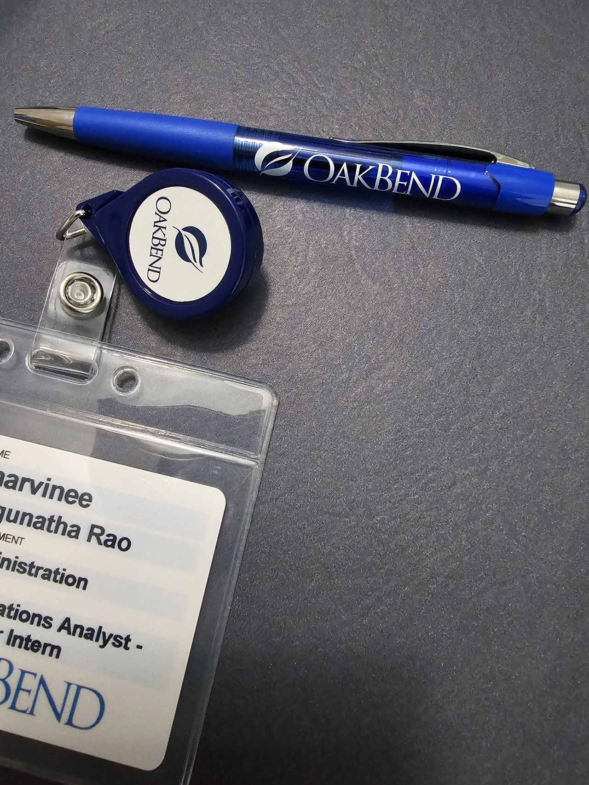
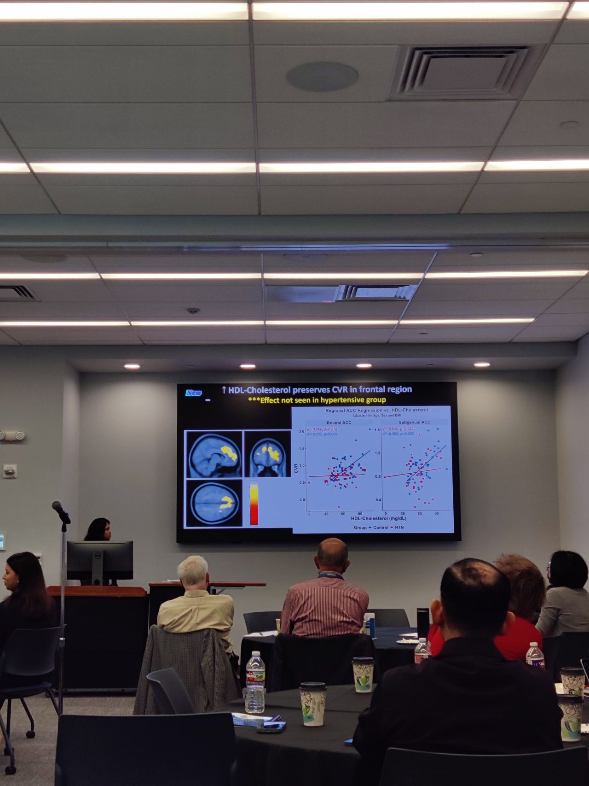
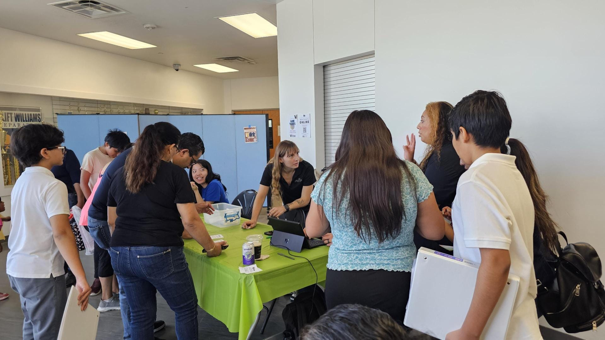
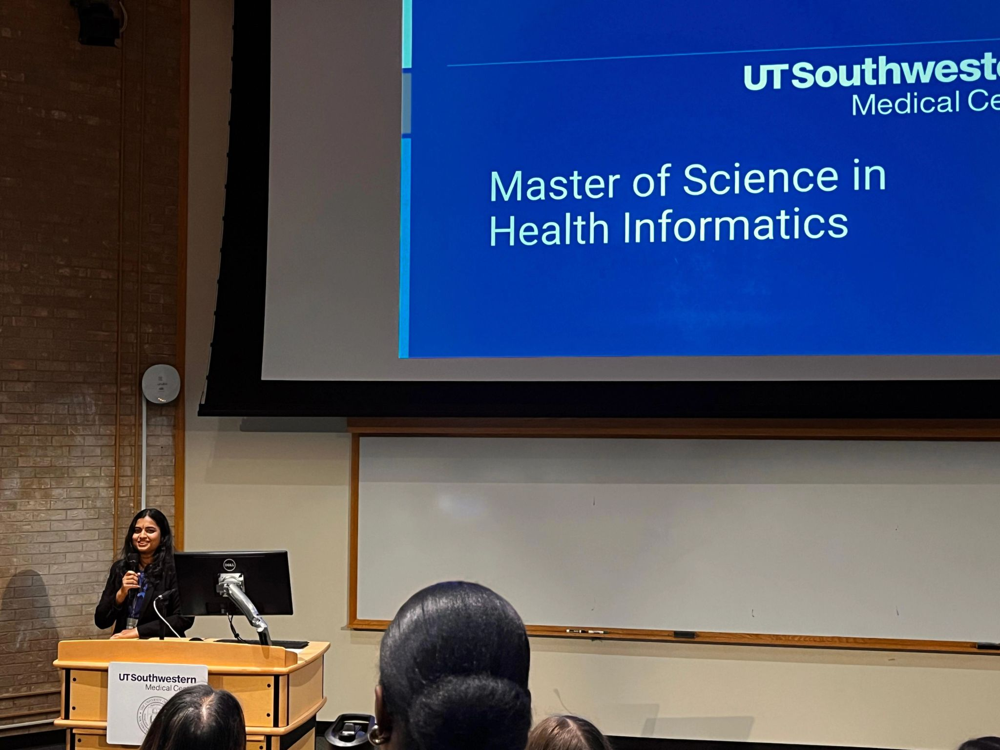
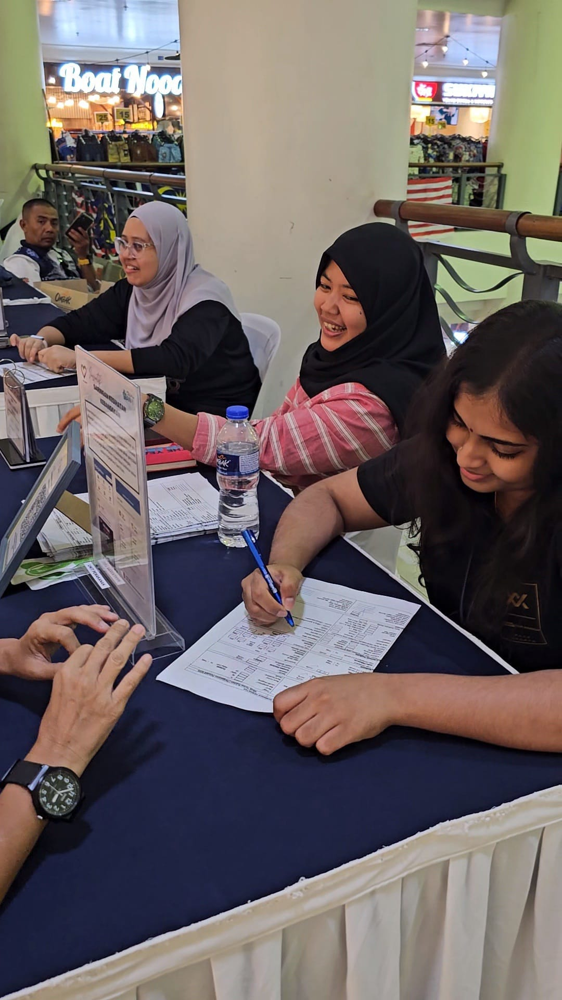
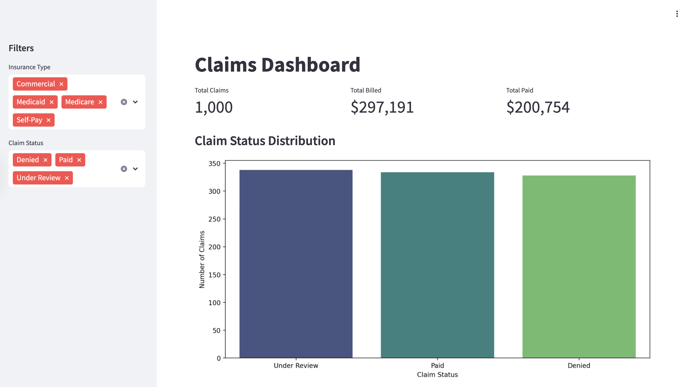
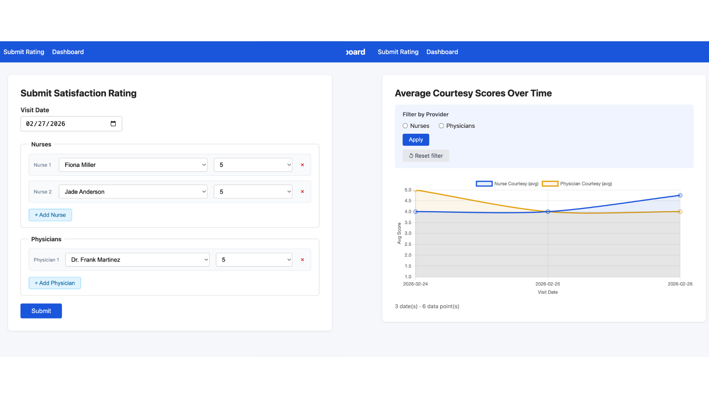
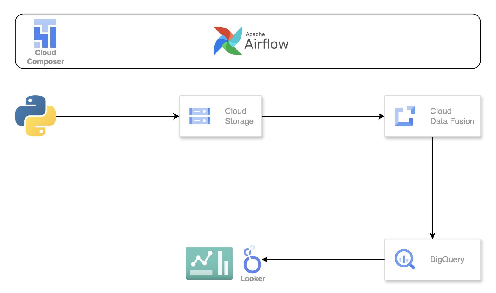

Developed SQL queries and Power BI reporting specifications for 30+ cessation program KPIs by translating reporting requirements into defined metrics, data model relationships, and DAX measures.
Validated reports and ensured traceability by creating a requirements traceability matrix mapping business definitions to referral and visit encounter tables, SQL logic, and Power BI visual outputs.
Cleaned and standardised referral and visit encounter data by removing duplicates, resolving missing smoking status, and correcting invalid date and status values prior to analysis.
Documented data sources, metric definitions, and validation steps to ensure reproducible Power BI reporting outputs.
Leadership
VP of Internal & External Affairs
Nov 2025 – Present
Consulting Club at UT Southwestern · Dallas, Texas
Led healthcare consulting career seminars for 60+ advanced-degree students, strengthening the clinical-to-industry transition pipeline.
Partnered with the provost to secure institutional Coursera licences for 30+ Consulting Club members.
Experience

EHR Analyst Intern
Jun 2025 – Aug 2025
OakBend Medical Center · Richmond, Texas
Built Power BI dashboards tracking hospital readmission and mortality rates, enabling executive decision-making.
Developed a software requirement specification document and presented to CEO for EHR migration project.
Experience

Clinical Research Intern
Mar 2025 – Nov 2025
UT Southwestern Medical Center · Dallas, Texas
Performed descriptive statistical analysis on clinical and imaging datasets using R and jamovi for published research.
Documented research methods and analysis pipelines to ensure reproducibility of all clinical research outputs.
Enforced HIPAA privacy controls and institutional policies governing secure patient data handling.
Leadership

President
Nov 2024 – Present
Health Informatics Student Leadership Association (HISLA) · Dallas, Texas
Organised a digital literacy workshop for 80+ parents, improving smartphone proficiency across Dallas K-12 community.
Education

MS in Health Informatics (MSHI)
Aug 2024 – May 2026
University of Texas Southwestern Medical Center · Dallas, Texas
Focusing on clinical data management, health analytics, and EHR systems.
Experience

Medical Officer
Jun 2021 – Jul 2024
Botanic Health Clinic · Klang, Malaysia
Delivered ad hoc Tableau reports for outpatient clinical programs and medical screenings.
Analysed maternal and child mortality trends using SQL; presented findings to district health officials.
Provided longitudinal care for patients with acute and chronic conditions and documented visits in EHR.
Education
Bachelor of Medicine and Bachelor of Surgery (MBBS)
Sep 2015 – Sep 2020
University of Malaya · Kuala Lumpur, Malaysia
Comprehensive medical training across clinical, surgical, and public health disciplines.
02 / Projects
Projects

Healthcare Claims Data Analysis & Visualization
Built a Python pipeline analysing claim rejection patterns with HIPAA-compliant PII de-identification and data cleaning. Analysed data using Pandas and visualised denial trends across insurance types via Matplotlib and Seaborn.
PythonPandasMatplotlibSeabornHIPAA Compliance

Patient Experience QI Dashboard
Developed a QI Satisfaction Dashboard that improved data visibility for healthcare quality metrics by 100% through a Flask-based web app featuring real-time daily average charts and provider-specific filtering.
FlaskPythonSQLData Visualisation

Employee Profile ETL Dashboard
Built a Looker Studio dashboard visualising employee profiles to support ad hoc and routine reporting. Orchestrated ETL automation using Python DAGs in Airflow, loading transformed data into BigQuery on scheduled refresh.